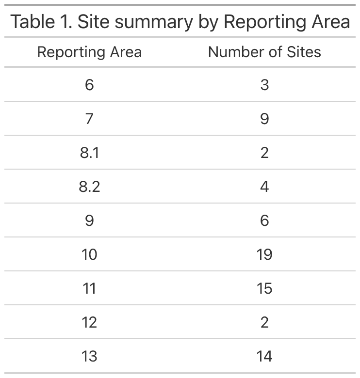
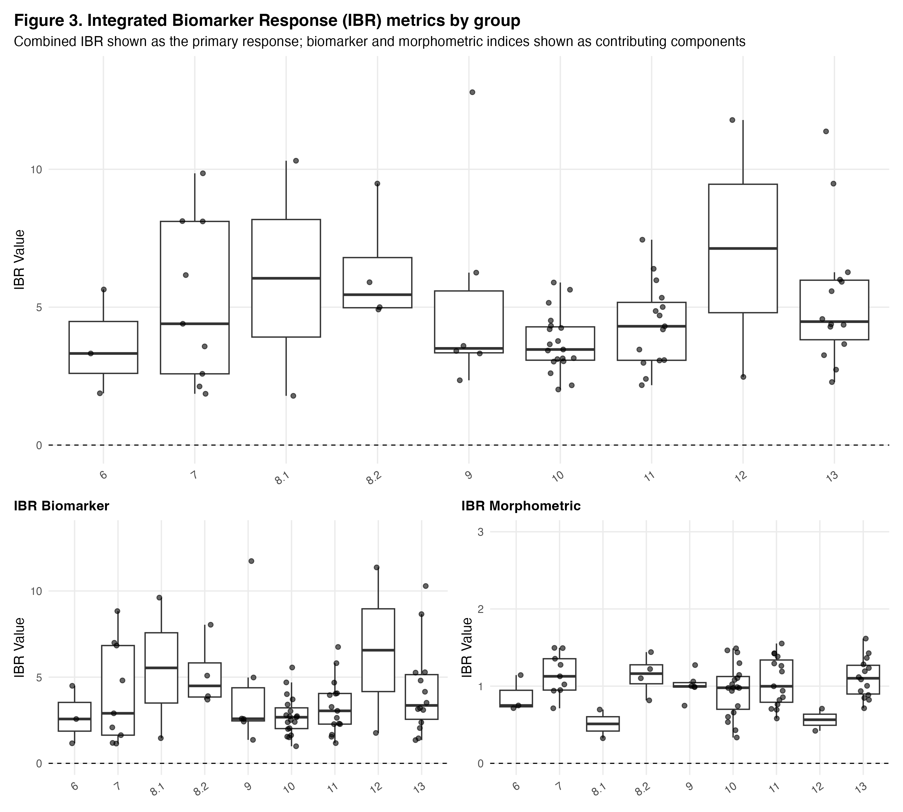
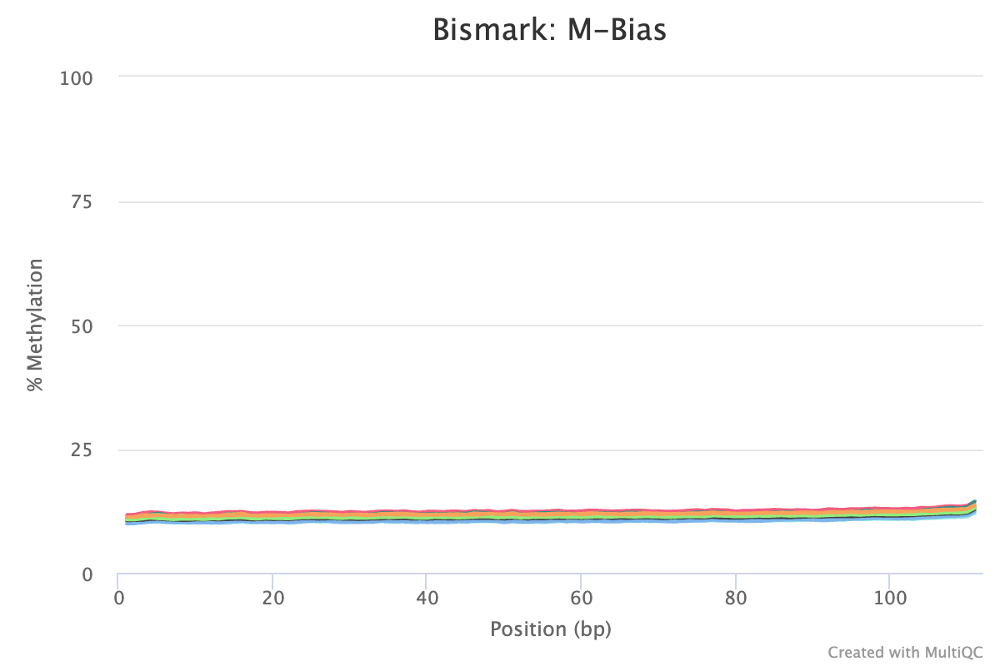
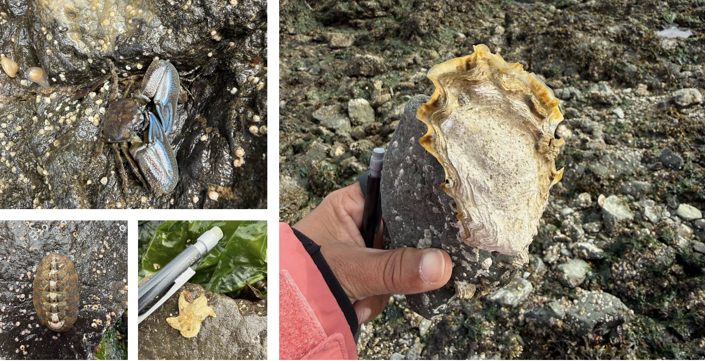
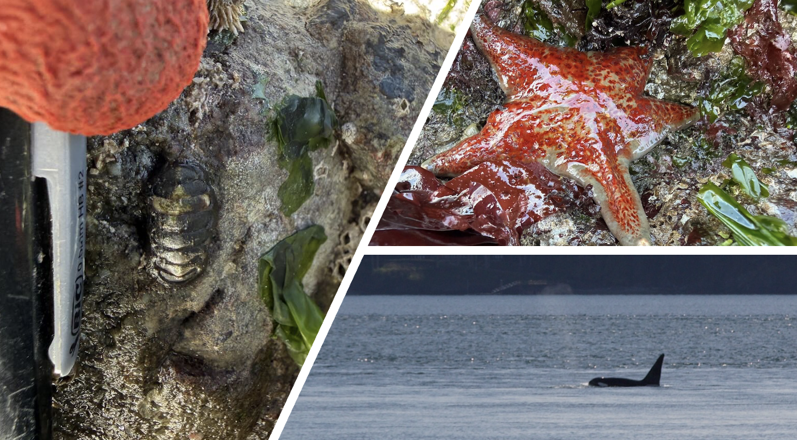
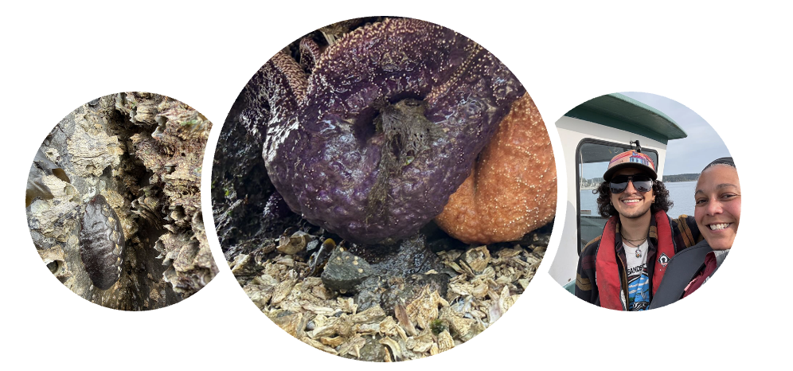

2026 April Daily Posts
This page compiles all daily posts for April 2026.
2026-04-01 — No April Goal Setting
Plan of the Week: March 30 - April 5, 2026
High- level outline for the week. Adjusted daily to reflect progress of the day before
- I am finally as close to healthy as I have been in awhile, so as long as the anxiety of being so behind doesn’t take me out, I will be solid!
Monday - Catch up on UW-RUA and NWS Poster
Tuesday - UW-RUA, No ScienceWednesday - Biomarker Manuscript
Thursday - Biomarker Manuscript
Friday - NWS Symposium
Saturday - Biomarker Manuscript
Sunday - No Science
Plan of the Day
Granular level task list to accomplish the high- level goal outlined above
- There are no goals nor plan for today. Nothing like being derailed because your brain cannot get out of the death- cycle of replaying everything.
- Goals for the month will be posted before the end of the week and today’s working sessions will be dedicated to knocking out the mile- long list of UW-RUA tasks I have right now.
Projects Touched Today
- DNA Methylation
- NWS Symposium
Progress Notes
- Today packed a 1-2 punch across two very important axes of my life at current. Since deep work is almost impossible, I will move forward with task management.
- First, finalized and submitted the poster overview of the outcomes of conservation opportunities.
- I doubt I’ll be able to present it, but at least now it is complete in case I can.
- Second, I had to clear out the remainder of my schedule for more pressing appointments, so that just feels like kicking the can down the road…
- The can will be kicked further down the road based on some department- level information.
- In my task processing, I was able to inspect and restart the methylation analysis.
- Sample 95, amongst the last to be aligned, has failed twice. The first time was due to a disconnection, and the second time is because I didn’t clean out the temporary BAM files and it was skipped as already aligned.
- I properly cleaned up the repo, synced it to Gannet, and restarted the script.
- The remainder of the day was doing nothing but knocking out tasks mostly unrelated to science.
- First, finalized and submitted the poster overview of the outcomes of conservation opportunities.
Outcomes: Products & Word Count
- No science products
Today’s total: 0 words
Monthly total to date: 0 words
Annual total to date: 32,672 words
Annual target total to date: 45,500 words
Next Up: Tomorrow’s Plan
- I have back to back obligations in and out of the home, Connor’s defense, and depending on my capacity, we shall see what can be done.
2026-04-02 — April Showers for Sure
Plan of the Week: March 30 - April 5, 2026
High- level outline for the week. Adjusted daily to reflect progress of the day before
- I am finally as close to healthy as I have been in awhile, so as long as the anxiety of being so behind doesn’t take me out, I will be solid!
Monday - Catch up on UW-RUA and NWS Poster
Tuesday - UW-RUA, No Science
Wednesday - Biomarker ManuscriptThursday - Biomarker Manuscript
Friday - NWS Symposium
Saturday - Biomarker Manuscript
Sunday - No Science
Plan of the Day
Granular level task list to accomplish the high- level goal outlined above
- The plan today is to try and focus for short working blocks in between my obligations.
Projects Touched Today
- DNA Methylation
Progress Notes
- I started today handling personal business.
- Next up was Connor’s MS defense where he demonstrated how morphology helped clarify some of the evolutionary relationships amongst diverse fishes using the skull shape of sticklebacks. It was very cool to see the culmination of a ton of hard work!
- I pulled my log notes from Notion to update my lab notebook. Not too many things going on so far this week so that was quick.
- I checked in on the methylation work and found that at some point prior to lunchtime my terminal disconnected. I got to repeat the erase/ rerun circle from yesterday.
- Since I don’t trust the option to close the browser and continue the work, the humpback whale sanctuary in Hawaii has been running any time I have to leave my computer to ensure the final alignment runs and lets me move forward in the methylation analysis. As of 1738, sample 95M has been running since about 1345. Let’s hope it will wrap up before the morning.
- It did finish and I was able to get the deduplication and MultiQC up and running by 1920, so that should be finished before morning.
- I outlined/ brain dumped the methylation chapter sections into a Google doc while I watched the deduplications run for a bit, and called it a day.
Outcomes: Products & Word Count
- Outlining Methylation Chapter: 553 words
Today’s total: 553 words
Monthly total to date: 553 words
Annual total to date: 33,225 words
Annual target total to date: 46,000 words
Next Up: Tomorrow’s Plan
- Will be determined tomorrow.
2026-04-03 — Methylation Analysis
Plan of the Week: March 30 - April 5, 2026
High- level outline for the week. Adjusted daily to reflect progress of the day before
- Moving forward.
Monday - Catch up on UW-RUA and NWS Poster
Tuesday - UW-RUA, No Science
Wednesday - Biomarker Manuscript
Thursday - Biomarker ManuscriptFriday - NWS Symposium
Saturday - Biomarker Manuscript
Sunday - No Science
Plan of the Day
Granular level task list to accomplish the high- level goal outlined above
- Keep the methylation analysis moving forward
- Present at the NWS Symposium
Projects Touched Today
- DNA Methylation
- NWS Symposium
Progress Notes
Checked my methylation outputs - the deduplication, MultiQC, and output organization wrapped up at 0745.
Next step is to run the deduplication and parameter checks on the first 10k basepairs to have for later checks - not making any adjustments based on these yet.
I used the methylation extraction and qc script from ceasmaller (Sam’s repo) to create the extraction script for the next step.
Ran the methylation extraction after the parameter checks were completed.
Started the methylation extractions with my modified code. Had to rebuild tool paths after the first fail because I didn’t update them correctly in the modified script
After repeated attempts where it seems to detect methylation extraction where there was none, I realized two major things:
First, I build the stupid skip loops wrong - got too caught up in humming fe, fi, of, fum I guess.
Second, it was a blessing in disguise since I had two directories mislabeled and would have been really confused why my extractions and their reports ended up in my code or reference directories…
During my work block with KPJ, she helped me talk through the steps of what I was asking the code to do and my anticipated outcomes, and fix the loops since I was still a little stuck.
Adding to my decision/ defense of decisions log, coverage (analysis decision) and buffer size (computer decision) explanations.
Coverage is set at 5 in the scripts in all of the lab repos I have searched. I know it is number of times a read is completed at a particular site in the sequence, but I don’t know why 5 is the choice.
Coverage, a.k.a. total reads at a particular site= number of unmethylated reads + number of methylated read
It is the minimum number of reads to support the proportion of methylation. If you have 3 reads- 1 methylated and 2 not, that is not a reliable 33% methylation. If you have 5+ reads and methylation is 1 of 5, that 20% is likely more accurate.
Coverage values are a balancing act between our ‘confidence’ in the results and the amount of data we exclude based on read count.
Since these are whole genome BS sequences (not RR), I may want to play with this coverage value to compare results since there is more to work with - may be a fools errand, but maybe not. I do not know the implications of higher coverage values based on the DNA extraction and sequence quality, nor do I know if increasing coverage will knock out relevant sites of methylation since inverts are ‘normally’ methylated in a scattered way versus verts.
Buffer size is an indication to the computer how much data to hold before writing it out.
This is a space and speed balancing act; 50% buffer is just asking the computer not to write out anything until it reaching 50% of the available working memory.
Not sure if it is appropriate on Raven since I modified this code from Sam’s script that was running on Klone.
Will leave it in the script in hopes it will also help speed up the process without screwing up anyone else running stuff on Raven
A later task is to run a quick script to put all of the checksums into a table or excel file or whatever for quick side by side comparisons and to keep with all of the other metadata. This is a clean-up step, not a process step.
Created an exact duplicate of the extraction script to run with a cover 10 for comparison.
- I can run this after the extractions for cover 5 because I will need to take my time through the results to really lock in what I do and do not understand before reviewing those results in comparison.
Next snag- the sorted BAM files are not in an order recognized…
Error message in the log for 105M:
“The IDs of Read 1 (LH00469:254:22HGFVLT4:2:2361:52054:3816_1:N:0:GTTACGCA+ATGGCGAT) and Read 2 (LH00469:254:22HGFVLT4:2:2441:28449:5398_1:N:0:GTTACGCA+ATGGCGAT) are not the same. This might be the result of sorting the paired-end SAM/BAM files by chromosomal position which is not compatible with correct methylation extraction. Please use an unsorted file instead or sort the file using ‘samtools sort -n’ (by read name). This may also occur using samtools merge as it does not guarantee the read order. To properly merge files please use ‘samtools merge -n’ or ‘samtools cat’.”
Remember: Bismark methylation extractor requires R1 and R2 to remain adjacent; sorted BAMS are not going to work.
I fixed the script to pull the unsorted BAM files, and once it began working, I left it to get ready to go.
Finally, I fixed my lab notebook not showing up on the handbook page and not showing up in the lab feed per GH Issue #2090 guidance.
The handbook page update worked. I think I added my name to the path twice instead of once…
I can’t see if the feed that drops into Slack worked, so I will wait until tomorrow to verify in case it only pulls once a day or at specific times or whatever.
Outcomes: Products & Word Count
- Extraction Analysis (Cover 5 and 10): 2 scripts
- Methylation Analysis Details: 368 words
Today’s total: 368 words
Monthly total to date: 921 words
Annual total to date: 33,593 words
Annual target total to date: 46,500 words
Next Up: Tomorrow’s Plan
- Set April goals and attainment plan.
2026-04-04 — Methylation and Biomarker Visualizations
Plan of the Week: March 30 - April 5, 2026
High- level outline for the week. Adjusted daily to reflect progress of the day before
- Moving forward.
Monday - Catch up on UW-RUA and NWS Poster
Tuesday - UW-RUA, No Science
Wednesday - Biomarker Manuscript
Thursday - Biomarker Manuscript
Friday - NWS SymposiumSaturday - Biomarker Manuscript
Sunday - No Science
Plan of the Day
Granular level task list to accomplish the high- level goal outlined above
- Keep the methylation analysis moving forward
- Review biomarker visualizations
Projects Touched Today
- DNA Methylation
- Mussel Biomarkers
Progress Notes
- Returning to the biomarker visualizations in R, not just GIS, I had to review what I had, figure out if it was correct, and adjust what wasn’t.
First, reviewing the existing viz, I created many with gt(), this will not render beyond HTML - a thing I did not know until too much Googling put me on the right path. To have tables/ data visualizations render in a Word or PDF, the kable() package has to be used in place of the gt() call that is great for my lab notebook, but not for my outputs.
Shifting to kable() also means a change in syntax that took waaaaaaaay too long - I have gotten into a rhythm with tidy and the html rendering since I add something to my digital notebook more often than adjusting my other work - so I focused on web- based rendering, instead of investigating the differences, this made the whole thing feel really silly.
I took the existing code, used the R-Ladies platform that has been a huge help in other work, and compared based on output before fixing, getting CoPilot to help with syntax, and running the new part correctly.
After that, I rendered the remaining plots in R before deciding what needed to be adjusted - don’t want to waste time. The tables, in manuscript and supplementary, needed to be reworked, along with the multi-faceted plots for the IBRs. I went to work on those.
The base structures are good and can be adjusted once revisions are underway.
- For the methylation work, I checked in multiple times throughout the day to ensure my extractions were continuing to run properly.
By the end of the day, the extractions were about halfway completed.
Outcomes: Products & Word Count
- Biomarker Plots: 1 multi-panel
- Biomarker Tables: 2 tables
Today’s total: 0 words
Monthly total to date: 921 words
Annual total to date: 33,593 words
Annual target total to date: 46,500 words
Next Up: Tomorrow’s Plan
- Tomorrow is Easter, so I have some cooking and family time ahead.
2026-04-05 — Plotting
Plan of the Week: March 30 - April 5, 2026
High- level outline for the week. Adjusted daily to reflect progress of the day before
- Moving forward.
Monday - Catch up on UW-RUA and NWS Poster
Tuesday - UW-RUA, No Science
Wednesday - Biomarker Manuscript
Thursday - Biomarker Manuscript
Friday - NWS Symposium
Saturday - Biomarker ManuscriptSunday - No Science
Plan of the Day
Granular level task list to accomplish the high- level goal outlined above
- Keep the methylation analysis moving forward
- Biomarker visualizations
Projects Touched Today
- DNA Methylation
- Mussel Biomarkers
Progress Notes
- Today’s working window is limited because it is Easter and I have Easter bunny, Easter chef, Easter everything duties.
- First checked in on the methylation extractions. They’re still running and looking good for what I understand at this moment.
- Tried to rsync and failed again- getting an error that my directory isn’t found. I triple checked the syntax, double checked my passwords, verified the location and paths, double checked gannet… I will check again when I’m less frustrated to make sure I’m not overlooking a simple error.
- Shifted over to the biomarker plots from yesterday.
I realized most of the plotting for the manuscript does not align with the narrative, so I prioritized the manuscript plots (IBR scores, contaminant indices, maps), identified the extraneous plots (transformed data before IBR creation, contaminant plots that are redundant because of the maps, radar plots), and moved over to the tables to do the same thing. The only two tables that are important are the correlation tables, the rest are supplementary.
Worth note, because there are 74 sites, these plots are created at the reporting area level for ease of understanding and the larger take home message clarity. The non-map plots are all box and whisker plots with the individual site data indicated as points.
First up, reviewing where I left off on the IBRs since I got the multi-panel layout setup but stopped before reviewing the axes, labels, take home message alignment.
The goal of this plot is to keep the combined score front and center since the analysis is based on that, and then to show how the biomarkers and morphometrics contributed to the combined score.
I didn’t mess with the labels because they are currently good enough for what I need.
I will need some feedback on how to handle the outliers that are compressing the graphs themselves into negligible boxes.
Shifting to the kable() package makes an easily formatted table with almost no effort, like the one below. Most notably, this table is important becasue of the variability in site number - it is something I have not spoken to re: manuscript, but will have to. Additionally, the outlier problem is clear in the IBR plot (below).


Outcomes: Products & Word Count
- Refining plots: 4 plots
Today’s total: 0 words
Monthly total to date: 921 words
Annual total to date: 33,593 words
Annual target total to date: 47,000 words
Next Up: Tomorrow’s Plan
- Set April goals and attainment plan, begin to frame my 1v1 with Steven for Wednesday.
2026-04-06 — Methylation and UW-RUA
Plan of the Week: April 6 - April 12, 2026
High- level outline for the week. Adjusted daily to reflect progress of the day before
- This week’s plan is to continue to move forward with the methylation analysis, refresh mutual goals, expectations and priorities with Steven, and set goals for April.
Monday - Planning the week & Setting April Goals
Tuesday - UW-RUA, No Science
Wednesday - Friday: Will Outline post Steven 1v1
Saturday - No Science
Sunday - Reading
Plan of the Day
Granular level task list to accomplish the high- level goal outlined above
- Continue to move forward with the methylation analysis.
- Knockout UW-RUA tasks, including traveler management
Projects Touched Today
- DNA Methylation
Progress Notes
- Today’s first priority was checking in on the methylation extractions; they were almost finished last night.
- All sequences were completed by 0500. All reports from Bismark and MultiQC were completed by 0600.
- My rsync problem was that I was trying to run it from my code directory… I knew I just needed to step away before trying again. I was able to get that running before Apple decided my computer update was more important - so I restarted it after being disconnected, but it is decidedly slower than molasses in January so we wait.
- Next up is to commit the smaller files to GH and start to look at the reports and ask questions.
- Next, I updated my notebook posts from the weekend. I started them each day, but didn’t finish them.
- Once that was done, I had to shift to some UW-RUA traveler management tasks that are time sensitive. My next step is April goal planning and building my 1v1 agenda for Wednesday.
- I took a look at the methylation extraction reports from Bismark and MultiQC. A couple things I jotted down while reviewing:
- M-Bias reports/ plots. ‘M’ethylation bias across read positions. M-bias looks at the percentage of cytosines are ’called’ methylated across every single base in the sequence. Additionally, the lack of any ‘jumps’ or ‘spikes’ in the lines indicate nothing external (non-biological) has created noise in the sequences.
- On average, all sequences are around 11% methylation at CpGs (see sample 272M plot from Bismark below). This means things like the trimming parameters and bisulfite conversion are consistent and not driving the methylation percentage up or down from a process POV.
- M-Bias reports/ plots. ‘M’ethylation bias across read positions. M-bias looks at the percentage of cytosines are ’called’ methylated across every single base in the sequence. Additionally, the lack of any ‘jumps’ or ‘spikes’ in the lines indicate nothing external (non-biological) has created noise in the sequences.

- Since I like a good list over a plot, I took the multiQC data table, added pertinent sample information and put it below. It helped me see that methylation, on average was the same across all samples - that makes the upcoming work of figuring out where that methylation is occurring very interesting.

Additionally, the low percentages of methylation at CHG or CHH (any cytosine that is not followed by a G(uanine) directly are low. This is important because what we know about animal methylation and it’s potential functional relevance tells us CpGs are where it’s at, so high numbers could indicate a bisulfite conversion issue in the data.
- Fun fact, methylation in plants typically occurs at CG, CHG or CHH sites. Check out this Muyle et al. paper from 2022 that explains it way better than me!
After looking over my reports, I returned to UW-RUA to prep for tomorrow.
Outcomes: Products & Word Count
- Something: 0 words
Today’s total: 0 words
Monthly total to date: 921 words
Annual total to date: 33,593 words
Annual target total to date: 47,500 words
Next Up: Tomorrow’s Plan
- Wrapping up my agenda for my 1v1 with Steven, setting up some April goals, and of course, UW-RUA.
2026-04-07 — Tuesday’s are UW-RUA Days
Plan of the Week: April 6 - April 12, 2026
High- level outline for the week. Adjusted daily to reflect progress of the day before
- This week’s plan is to continue to move forward with the methylation analysis, refresh mutual goals, expectations and priorities with Steven, and set goals for April.
Monday - Planning the week & Setting April GoalsTuesday - UW-RUA, No Science
Wednesday - Friday: Will Outline post Steven 1v1
Saturday - No Science
Sunday - Reading
Plan of the Day
Granular level task list to accomplish the high- level goal outlined above
- Continue to move forward with the methylation analysis.
- Finish filling in the Agenda for my 1v1 with Steven tomorrow.
- Shift over to UW-RUA work for the remainder of the day. I have 8 travelers in progress and a ton of programming information to lock in.
Projects Touched Today
- DNA Methylation
Progress Notes
- Tuesday’s are my only full- day, UW-RUA days. The rest of the week see’s RUA tasks/ events sprinkled throughout.
- In between those obligations, I worked on my agenda for my 1v1 with Steven and the GPC, finally rendered that this afternoon around 3:00 pm to share.
- At the end of the day, I managed to resolve my github merge problem with my smaller files on Raven and called it a day!
Outcomes: Products & Word Count
- Something: 0 words
Today’s total: 0 words
Monthly total to date: 921 words
Annual total to date: 33,593 words
Annual target total to date: 48,000 words
Next Up: Tomorrow’s Plan
- Something that will be clear by the end of the day…
2026-04-08 — Meetings & Methylation
Plan of the Week: April 6 - April 12, 2026
High- level outline for the week. Adjusted daily to reflect progress of the day before
- This week’s plan is to continue to move forward with the methylation analysis, refresh mutual goals, expectations and priorities with Steven, and set goals for April.
Monday - Planning the week & Setting April Goals
Tuesday - UW-RUA, No ScienceWednesday - Friday: Will Outline post Steven 1v1
Saturday - No Science
Sunday - Reading
Plan of the Day
Granular level task list to accomplish the high- level goal outlined above
- Continue to move forward with the methylation analysis.
- Lab and 1v1 Meetings
Projects Touched Today
- Mussel Methylation
Progress Notes
- Today started with lab meeting where we shared updates and discussed lab equipment that could be purchased.
- Next, I added the updated biomarker manuscript visuals to the shared Google Drive folder.
- I met with Steven and Chelsea to go over the a plan to put these alerts in the rearview.
- I followed up with an email outlining what we discussed in the second half of the meeting.
- I set up 1- hour working blocks with Steven up through the week of May 11th.
- I put my project log together for the methylation analysis, so we had a jumping- off place beyond just an agenda of next steps.
- I shifted over to working on the methylKit markdown for the next steps in the methylation analysis.
- Before getting to that, I looked up the DSS package that is the newer analysis package.
- It is a package specifically (as far as I can see) for assessing DMLs and DMRs…
- Fun find- Roberts Lab alum, Professor Yaamini Venkataraman’s lab notebook post about using DSS for analysis.
- methylKit ‘DSS’ applications can be found here, and DSS applications can be found here.
- A paper outlining the application can be found here.
- I added both the package bookmark to my project bookmarks folder, and the paper to my bioinformatics library in Zotero before moving back to my methylKit work.
- In the process of looking at the DSS v methylKit packages, I came across a DNA Methylation workflow tutorial. I haven’t really looked at it yet - that is a weekend task when I’m not trying to wrap my head around how to work through some of the other steps.
- Getting back on task, I started by building a proper metadata table. This didn’t take long, but is definitely important for this leg of the work.
- I took my sample PAH classifications ranked from 1-6, the PAH concentrations, my site names, sample names, and then added treatment (0=low, 1=high) and a replicates column in case it will be needed later to existing data.
- Next I took the markdowns from the oly-repo in the lab handbook and created my methylkit files (4 total) following the same format and replacing the paths/ object names/ etc. that aren’t applicable.
- Some of the parameter choices in the DML and DMR files are unclear at the moment and will be added to my running list of Steven questions. Nothing in the initial file import or qc work is unclear, so I’m going to go with it and annotate where I have questions after ensuring I have working code.
- Before I get really rolling, I need to add a few lines re: directory outputs for the objects and plots, so I did that in the console rather than in the markdowns.
- I made notes in the markdowns about what I need to do next, and will get back to it tomorrow.
- Before getting to that, I looked up the DSS package that is the newer analysis package.
Outcomes: Products & Word Count
- methylKit markdowns: 4 scripts
Today’s total: 0 words
Monthly total to date: 921 words
Annual total to date: 33,593 words
Annual target total to date: 48,500 words
Next Up: Tomorrow’s Plan
- Something that will be clear by the end of the day…
2026-04-09 — Task Management is the Name of the Game
Plan of the Week: April 6 - April 12, 2026
High- level outline for the week. Adjusted daily to reflect progress of the day before
- This week’s plan is to continue to move forward with the methylation analysis, refresh mutual goals, expectations and priorities with Steven, and set goals for April.
Monday - Planning the week & Setting April Goals
Tuesday - UW-RUA, No Science
Wednesday- Friday: Will Outline post Steven 1v1Thursday - Task management
Friday - Biomarker Manuscript - ‘Clarify’ edits
Saturday - No Science
Sunday - Reading
Plan of the Day
Granular level task list to accomplish the high- level goal outlined above
- Get my crap together! I have a multi-car pileup of tasks across so many different science projects and personal projects that today is the day to knock out what I can, schedule or delegate what I can’t, and to make a few prioritization decisions to align with some of my larger goals and deliverables.
Projects Touched Today
- All of them! No, seriously…
- Yellow Island
- Mussel Biomarkers
Progress Notes
- Today started with knocking out some personal business. I bring it up because all of the ‘hurry up and wait’ gave me time to take a look at my brain dump task list from earlier this week, break down some of the multi-step tasks, identify what would or would not make the boat go faster.
- “Will it make the boat go faster?” is the fundamental question Martin McElroy asked of the British rowing team while they were going for (and attained) the gold medal in the 2000 Olympics.
- Are the preparations, decisions, or actions I’m making and taking making my boat go faster? Going back to one of my favorites, Nick Saban, he is all about the process, not the outcome. So when you put these together you get the reinforcement of the daily task of focusing on what makes a difference (McElroy), and a commitment to meeting the daily task with 100% (Saban).
- All that to say that today was a mini-reset and refocus on what makes my boat go faster.
- First up, I knocked out the logistics for the 5 tide series on Yellow.
- I made my ferry reservations, bought my tickets, pulled together my supply lists, touched base with the land steward to confirm the volunteers’/ interns’ schedules for support, and verified transport times to and from the ferry landings. Made my next steps list for food and travel days, pulled out the gear I’ll need to keep in the trunk, and blocked my travel time in addition to the tide survey times rather than having 24hr blocks on my calendar.
- Next up, I pivoted to some event management for the upcoming UW-RUA event’s I’m coordinating.
- I followed that up with a touch-base style ‘office hours’ with a few travelers that need some additional support in getting their visits planned and on their way.
- Next on the list was a critical review of the biomarker manuscript. I keep making ‘large’ to-do’s like ‘write the abstract’, rather than the actual steps. This took a long time to keep myself focused on the critical look rather than fixing the thing I put on the list. It yielded a coupe of pages of notes that feels a little daunting.
- I batched the type of notes into writing, citing, and clarifying. Any notes that don’t fall into those categories are not a priority to get the work out.
- The clarifying section includes notes like, “lines 22-26 state but don’t explain the connection between legacy contaminants and climate- driven stressors.” What is one sentence that ties these together?
- The citing section includes notes like, “line 31, 34, and 37 have synthesized for the public report-level citations.” What are the individual papers/ research that support this synthesis?
- The writing section includes notes like, “lines 242-249 is about the spatial pattern of the biomarkers, but not the spatial pattern of the contaminant classes that is clearer and statistically significant.” This is where the results are misaligned; the contaminants are spatially significant, but the biomarker response is not, this is where the IBR and Contaminant Indices come into play - justify why these ‘scores’ are important in the narrative by connecting the spatial analyses to the biomarkers.
- I attended Maya Groner’s seminar and learned more about marine diseases than I thought! Some very interesting and ‘pugilistic’- themed research going on in the Bering!
- Finally, I made a plan of attack for tomorrow’s edits on the Biomarker manuscript, identified the one report I want to review this evening to dig into in the morning, and called it a day.
- “Will it make the boat go faster?” is the fundamental question Martin McElroy asked of the British rowing team while they were going for (and attained) the gold medal in the 2000 Olympics.
Outcomes: Products & Word Count
- Biomarker manuscript critical review: ~800 words
Today’s total: 800 words
Monthly total to date: 1721 words
Annual total to date: 34,394 words
Annual target total to date: 49,000 words
Next Up: Tomorrow’s Plan
- Biomarker manuscript. My goal is to work through the ‘clarify’ notes and complete the research for the wdfw report I want to support with not only the report, but the published research backing it.
2026-04-10 — Continuing Prioritization/ Task Management & Biomarkers
Plan of the Week: April 6 - April 12, 2026
High- level outline for the week. Adjusted daily to reflect progress of the day before
- This week’s plan is to continue to move forward with the methylation analysis, refresh mutual goals, expectations and priorities with Steven, and set goals for April.
Monday - Planning the week & Setting April Goals
Tuesday - UW-RUA, No Science
Wednesday- Friday: Will Outline post Steven 1v1
Thursday - Task managementFriday - Biomarker Manuscript - ‘Clarify’ edits
Saturday - No Science
Sunday - Reading
Plan of the Day
Granular level task list to accomplish the high- level goal outlined above
- Pull the individual manuscripts from the WDFW reports to identify the original work, not the synthesis.
- Start working through the ‘Clarify’ list of edits on the biomarker draft
Projects Touched Today
- Mussel Biomarkers
Progress Notes
- Working through the 2021-22 WDFW and 2014 and 2016 reports is the first task of the day.
- I skimmed through the sections I was most interested in, matched what I could to the references in the reports, and made a list of topics/ writing within the reports where the citations may not be enough for what I need.
- The goal here is to cite the original papers alongside the report for any sentences in the manuscript that incorporate more than just the ‘outcome’ of that section of the report.
- For example, the sections that talk about mussel biology and their role as a monitoring tool is basic organism biology, so the report is not aligned with that as a citation. I have used Gosling’s tome on mussels, but Puget Sound specific information should include the papers that have come out of here.
- The further I went with this, the more my side-notes running doc was populating with better, cleaner ideas to translate the biomarker work. I shifted to working on the edits and put the citation work aside.
- I skimmed through the sections I was most interested in, matched what I could to the references in the reports, and made a list of topics/ writing within the reports where the citations may not be enough for what I need.
- Moving over to the clarify list of editing needs, my goal was to identify the quick fixes over the more complex ones.
- Right out of the gate, the overall narrative of the manuscript was everywhere but where it should have been. I found myself asking what I was trying to convey and I did the damn work. So I forced myself to write out what I wanted to say, a single (maybe two) sentence that explains the most important part of each section.
- That was harder than it sounded…
- Introduction: We tested integrating contaminant concentration data and paired, traditional (and validated) biomarker response to evaluate the extent to which biomarkers can inform ecological interpretation of contaminant data.
- Method: This part is solid!
- Results: The contaminants, by class, were highly spatially correlated, however the biomarker response and IBR were less only moderately correlated.
- Discussion: The complexity of biological impact requires multiple levels of assessment, including the traditional biomarkers, to clarify the contaminant- organism relationship. Adding molecular, and environmental layers of evaluation can improve the capacity of existing monitoring programs.
- By the end of all of this, I managed to get a drafted abstract, a few bits for the introduction, and a few bits for the discussion of the P450 and SOD biomarker responses in contrast to the contaminant indices.
- I was also able to identify my lack of enforcement around the choice to use an IBR, and my lackluster discussion of potential confounding or collaborative effects of the contaminant mixtures in the biomarker responses.
Outcomes: Products & Word Count
- Biomarker drafting: 1078 words
Today’s total: 1078 words
Monthly total to date: 2799 words
Annual total to date: 35,472 words
Annual target total to date: 49,500 words
Next Up: Tomorrow’s Plan
- Saturday is a day off.
2026-04-11 — Weekly Wrap-Up & Biomarkers
Plan of the Week: April 6 - April 12, 2026
High- level outline for the week. Adjusted daily to reflect progress of the day before
- This week’s plan is to continue to move forward with the methylation analysis, refresh mutual goals, expectations and priorities with Steven, and set goals for April.
Monday - Planning the week & Setting April Goals
Tuesday - UW-RUA, No Science
Wednesday- Friday: Will Outline post Steven 1v1
Thursday - Task management
Friday - Biomarker Manuscript - ‘Clarify’ editsSaturday - No Science
Sunday - Reading
Plan of the Day
Granular level task list to accomplish the high- level goal outlined above
- Saturday offers a few bonus hours of working time as I was able to wrap–up some of my other obligations earlier than expected.
- Goal 1- get a weekly wrap-up post knocked out.
- Summarize the week’s activities, put the priority dates on my physical wall calendar, and start to layer-in the weekly plan for the methylation manuscript.
- Goal 2- review my writing updates on the biomarker manuscript and either update the manuscript or make notes on what can be improved.
- Goal 1- get a weekly wrap-up post knocked out.
Projects Touched Today
- Mussel Biomarkers
- Mussel Methylation
Progress Notes
- I started by writing my weekly wrap-up post.
- I have gotten out of the habit of reviewing the past week in totality, identifying what did and did not work, and using it to build the plan for the upcoming week, so this helped me return to the practice.
- It also made it clear that my process may be helpful to others who are struggling to balance multiple priorities, so I included it as I worked it.
- Finally, doing this helped me with the schedule review I typically do on Sunday. It’s a short week, next week, because I’ll be heading up to Yellow for my first tide series. I have to make sure I don’t overload it!
- Next, while working through my planning process, I created the list of weekly tasks/ deliverables for the writing portion of the methylation work.
- It’s still a little loosey-goosey, but I’m getting closer to something with manageable momentum.
- The only constant right now is the reading load. Unlike how I was reading for biomarkers, I am going to add an annotated bibliography. I spent way too much time reviewing my notes over and over, so rather than have to do that every time I sit down to write, I’m going to add a column for the annotation to the lit table that makes it much easier to only review the papers I need for the portion I’m working on rather than using the tag- system to choose.
- Returning to the biomarker manuscript, I didn’t realize that the draft and visuals were in my personal Google Drive rather than my UW one. I set those up properly before reviewing my writing from yesterday.
- The new link to the products is here.
- I took a look at my newer pieces, my current existing draft, and fought with my brain a bit to keep it on track. A good chunk of my drafting yesterday is a bit elementary in structure and word choice, so rather than fight with it, I made notes as to which lines in each section the sentences supported and ‘struck out’ what was already covered in the full draft.
- That was the extent of it. Fresh brain in the morning = fresh writing and incorporation.
Outcomes: Products & Word Count
- Weekly wrap-up post: 1621 words
Today’s total: 1621 words
Monthly total to date: 4420 words
Annual total to date: 37,093 words
Annual target total to date: 50,000 words
Next Up: Tomorrow’s Plan
- Back at the biomarker draft.
2026-04-12 — Mussels, Mussels, and More Mussels
Plan of the Week: April 6 - April 12, 2026
High- level outline for the week. Adjusted daily to reflect progress of the day before
- This week’s plan is to continue to move forward with the methylation analysis, refresh mutual goals, expectations and priorities with Steven, and set goals for April.
Monday - Planning the week & Setting April Goals
Tuesday - UW-RUA, No Science
Wednesday- Friday: Will Outline post Steven 1v1
Thursday - Task management
Friday - Biomarker Manuscript - ‘Clarify’ edits
Saturday - No ScienceSunday - Reading
Plan of the Day
Granular level task list to accomplish the high- level goal outlined above
- Sunday’s original goal was to catch up on my reading re: methylation papers, but based on my upcoming week, I will shift to working on the biomarker manuscript and methylation analysis today instead.
Projects Touched Today
- Mussel Methylation
Progress Notes
- I started by updating the Methylation Project Log to include a page dedicated to questions and clarifications.
- This is in conjunction with the rest of the project documentation to date. That project log can be found here.
- The big goal is to keep as much documentation together as possible, so this is a test run for how it may operate.
- Next, I set up the Agenda outline for my working session with Steven for Wednesday.
- The Agenda is here - but definitely will not be complete until Tuesday.
- I moved over to cleaning up and running the first methylKit script (06.0) to see if I know what I’m doing…
- Before that, I added the context column to the metadata table
- I had a feeling that I misinterpreted the methylKit code files from their original repos, and I was correct. So, I am going to make the following adjustments that match my current workflow without duplicating effort in any single script.
- Up first, the most basic is to fix the titles of each script so that they are formatted properly.
- Next, I’m going to adjust the setup. In 6.0-methylKit_import_and_qc, I’m going to also add the ‘unite’ step and PCA creation to put anything ‘data prep’ in the same script.
- I put that together and started- or so I thought- I had to install methylkit first. Using Bioconductor and the documentation from the package site, it was a nice reminder that a perfect script doesn’t exist and you should probably check your tools as well! The time it takes to load the tools you could be working on the script.
- That failed repeatedly because of the R version, the data.table package version, and a whole host of other issues that me & ChatGPT worked through, so I went to the GitHub install of methylKit via the al2na Github repo.
- To do that, I had to install devtools - I feel like I’m constantly installing this - this is a sign that I need to do a little investigation at another time.
- After devtools install and call, a whole host of things needed updating and then methylKit gave me hope…
- Once this failed, I took a step back, rethought through the actual problem, and while staring at my screen was reminded that I built an environment to start work on my home device rather than the remote - it’s a container based in conda.
- Pivoting to my existing environment, I tried to activate my conda environment - nothing, I tried mamba instead thinking I just forgot - wrong.
- So, rather than fight the tide and keep trying to find these package version mismatches - which BTW were only the beginning problem - I am trying to remove the conflicts by ‘containing’ the work environment.
- In terminal, I checked for both mamba and conda again, came up empty, and installed minimamba to go back to the controlled environment to try and install methylKit. It’s taking a bit, but once that is finished, I have a complete environment that should allow me to load methylKit- fingers crossed.
- I lost it because I restarted R because renv() prompted it - this is uncool. Found it again, downloaded BiocManager again with the correct version. Got to methylKit - it failed.
- This time the dependencies were the cause- PROGRESS!
- I installed the other packages: c( “GenomicRanges”, “GenomeInfoDb”, “Rsamtools”, “fastseg”, “rtracklayer”, “Rhtslib”) and tried again.
- None of that worked - I have literally tanked it at all troubleshooting or installation or whatever. That feels like time to take a break.
- Following that, I’m going to put the DML and DMR code together into a single script, and then follow up with the tiles markdown.
Outcomes: Products & Word Count
- Updated methylKit scripts: 3
Today’s total: 0 words
Monthly total to date: 4420 words
Annual total to date: 37,093 words
Annual target total to date: 50,500 words
Next Up: Tomorrow’s Plan
- Biomarkers and methylation analysis.
2026-04-13 — Patience Please…
Plan of the Week: April 13 - April 19, 2026
High- level outline for the week. Adjusted daily to reflect progress of the day before
- This week is all about biomarkers and methylation.
Monday - Methylation,
methylKitrunTuesday - UW-RUA, biomarkers
Wednesday - Biomarkers
Thursday - Biomarkers
Friday - Task management & ferry to FH/ Yellow
Saturday - Yellow Island Surveys
Sunday - Yellow Island Surveys
Plan of the Day
Granular level task list to accomplish the high- level goal outlined above
- My primary goals for today are as follows:
- Fix my RStudio/ R updates that crashes my local machine before it gets the printer treatment…
- Get
methylKitloaded in Raven or open an issue for help - Biomarker drafting
Projects Touched Today
- Mussel Methylation
Progress Notes
- I left off yesterday making a mess in R and RStudio. My local machine caught me slipping and I updated the working R version when switching between projects. Cue the BS.
- To add insult to injury, I was already making an installation mess in Raven, so I wrapped up, made my notes, and considered leaving my laptop out in the rain…
- A little sleep and a timer made all of the difference. First, I uninstalled and then re-installed R and then RStudio and fixed my local machine issue.
- I also disabled my
.RDataand any.Rprofiledocs temporarily until I can figure out what I setup that keeps making a mess in my stuff!
- I pivoted to some UW-RUA traveler tasks that are time sensitive before returning to fixing my software.
- Returning to Raven and the
methylKitinstall from hell…- During my working block with KPJ, I decided to go back with fresh reasoning and install
methylKitsince I’d done some clear- headed thinking about the issues and Kristin is a great resource for coding conundrums. - First, working through all of the options back to back yesterday clouded my goal. The goal is to get the correct versions of
BiocManagerandmethylKitinstalled so I can keep moving forward with the analysis. - I verified I was in my
bio-clienvironment to prevent competing versions of R, and maximize capabilities in my micromamba ‘container’ of sorts, akabio-cli. Once I activated that, I navigated to R in terminal, verified the version (4.3.3), verified where my R libraries are located, and my working directory:
- During my working block with KPJ, I decided to go back with fresh reasoning and install
[1]"/home/shared/8TB_HDD_02/cnmntgna/R/x86_64-pc-linux-gnu-library/4.2"[2]"/home/shared/8TB_HDD_02/cnmntgna/micromamba/envs/bio-cli/lib/R/library"
[1] "/home/shared/8TB_HDD_02/cnmntgna"
- I then went back to the BiocManager documentation, verified the version should be 3.18, not 3.16 (which I was trying yesterday) for R versions 4.3.x. I then crossed my fingers and watched the install…
Trying to solve an installation or actual coding problem 99.999999999999% requires me to take a step back and identify - out loud - what I am actually trying to do before accessing the internet! I lost a few hours yesterday trying to jump into the middle to fix something I already laid a foundation for. Go back to the basics…
Moving on…
BiocManagerinstalled and version 3.18 verified.methylKitfailed.Error: object ‘key<-’ is not exported by 'namespace:data.table' Execution haltedRemembering to go back to the basics… I checked my paths, my working directories, and the
methylKitdocumentation in the al2na GitHub repo. Even in my updated environment, R version 4.2 is overrunning 4.3 - what a bully. So I will fix that, and then thedata.tableissue.Working with KPJ, I created new directories in my environment that are exactly the same except they terminal in 4.3 instead of 4.2, and re-pointed my environment to chose the newer libraries…
Next hurdle - the
data.tablepackage is too new- it is 1.18.2.1. Installed the older 1.16.4 version successfully.
find.package("data.table") packageVersion("data.table")
[1] "/home/shared/8TB_HDD_02/cnmntgna/R/x86_64-pc-linux-gnu-library/4.3/data.table" [1] ‘1.16.4’
Now, for
methylKit… to fail. Segmentation fault (core dumped)… sounds egregious. More troubleshooting.Halfway through trying to understand the error message, Kristin and I remembered we have this really nice conda/ mamba environment. So, I found the Bioconda GitHub page with instructions to install via my
micromambaenvironment.Helpful within that is the compatible versions list of the gazillion packages needed for this program.
rtracklayerwas the next culprit, so installing and loading that, version 1.62.0, finally opened the door tomethylkit version 1.28.0. I am rating this escape room 0/10.
Now for the true test- the code in the markdown.
- Which failed.
After knocking out some UW-RUA tasks, I returned with a fresh set of eyes.
Problem 1 - no matter how many times (or ways) I set my working directory or activate my working environment, the markdown is fighting me.
Problem 2 - my launch/
.Renviron/.Rhistoryfiles are in a fight to pull me into insanity.Fixing problem 2 first will hopefully solve have the fight.
I became a recursive remover with impunity! I suspect the repeat attempts and fails created a bunch of mixed signals.
I did that because in my documentation perusal, I found that while
condaandmambaare discussed kind of interchangeably, they are companions, not options - this helped me clarify my primary conflict - several ‘environments’ that could be one.Once I renamed my old history and environment files, I changed my global options in R to stop loading from the previous session, restarted and followed the bioconda instructions to get my tools in one environment.
I now have a
wgbsenvironment - outside of the methylation project - that I can use for this work and all subsequent projects. The environment includes the QC and alignment tools as well. I am very pleased!- It did activate within the markdown once I rendered the markdown as quarto & now my next step is to fix the actual coding errors I have created by modifying the chunks to test against the other environments and workarounds I attempted earlier today.

Outcomes: Products & Word Count
- WGBS environment!
Today’s total: 0 words
Monthly total to date: 4420 words
Annual total to date: 37,093 words
Annual target total to date: 50,500 words
Next Up: Tomorrow’s Plan
- UW-RUA and biomarker edits.
2026-04-14 — UW-RUA, Taxes & Mussels
Plan of the Week: April 13 - April 19, 2026
High- level outline for the week. Adjusted daily to reflect progress of the day before
- This week is all about biomarkers and methylation.
Monday - Methylation,methylKitrunTuesday - UW-RUA, biomarkers
Wednesday - Biomarkers
Thursday - Biomarkers
Friday - Task management & ferry to FH/ Yellow
Saturday - Yellow Island Surveys
Sunday - Yellow Island Surveys
Plan of the Day
Granular level task list to accomplish the high- level goal outlined above
- My primary goals for today are as follows:
- Knocking out UW-RUA meetings, tasks & traveler management
- Updating my 1v1 Agenda with Steven for tomorrow
- Helping the kid file her taxes…
Projects Touched Today
- 1v1 Agenda
Progress Notes
- I kicked off the day working on UW-RUA tasks - it is Tuesday after all.
- Next, I updated my 1v1 Agenda with Steven for tomorrow - the big items only
- I wrote out the plan for the methylation manuscript
- Added some of my paragraph revisions and placeholder figures to the biomarker manuscript
- The goal for the rest of the day is to complete the smaller items I left out of the agenda in between meetings.
- Wrapped up the day filing taxes with the kid…
Outcomes: Products & Word Count
- No tangible products today
Today’s total: 0 words
Monthly total to date: 4420 words
Annual total to date: 37,093 words
Annual target total to date: 50,500 words
Next Up: Tomorrow’s Plan
- Steven 1v1 and more biomarker updates.
2026-04-15 — Working Session & Re-Focusing
Plan of the Week: April 13 - April 19, 2026
High- level outline for the week. Adjusted daily to reflect progress of the day before
- This week is all about biomarkers and methylation.
Monday - Methylation,methylKitrun
Tuesday - UW-RUA, biomarkersWednesday - Biomarkers
Thursday - Biomarkers
Friday - Task management & ferry to FH/ Yellow
Saturday - Yellow Island Surveys
Sunday - Yellow Island Surveys
Plan of the Day
Granular level task list to accomplish the high- level goal outlined above
- My primary goals for today are as follows:
- Continue working through the biomarker draft updates
- 1v1 with Steven
- Verify my supplies, working gear, and transportation are set for Yellow.
Projects Touched Today
- Mussel Biomarkers
- Mussel Methylation
- Yellow Island
Progress Notes
- I started the day by making ferry reservations up through my 4th tide series. Holding off on the 5th series until I know if I need it.
- I wrapped up UW-RUA tasks I couldn’t get to yesterday.
- Returned to Yellow work by verifying my survey sheets, guides, gear, and Rite in the Rain paper are all good to go for the last preparation steps on Thursday.
- Have to check the boxes in the office to see if I am out after this series.
- Met with Steven for our first of this new style of working session. The key takeaways are:
- Biomarker draft to committee on 4/17 with a feedback deadline of 5/8.
- Shifting the methylation manuscript timeline to to use this DML table, determine the number of DMLs (17), the number of DMLs that are annotated, and have a drafted methods and results prepared for out 4/20 meeting.
- An agenda with the deliverables will be prepared and sent to Steven no later than Sunday morning, 4/19.
- Next week during our working session we will review the drafted methods and results, choose the key result, and start framing the discussion.
- Next up, I did a quick review of the DML table and associated outputs to ensure I have what I need to move forward with our plan.
- There are 17 DMLs using 55% difference and a q-value = 0.01.
- Difference= mean methylation of tx 0 - mean methylation of tx 1
- Q-value = false discovery rate
- When you put these parameters together, at these levels, we get biologically meaningful (%) and statistically sound (q) results.
- A later task is to play around with both to see what is the same, different, defensible.
- The annotated gene list is in Steven’s notebook post. A quick review shows the following:
- 12 of 17 DMLs mapped to genes that are hypo-, hyper- methylated, or both.
- 4 are hyper-methylated, 6 are hypo-methylated, and 2 have both instances.
- The magnitudes of methylation in either direction are the same.
- 10/12 have a characterized gene function, and 2/10 are uncharacterized.
- A task for Friday will be to dig into the result a little deeper to understand what I am seeing.
- There are 17 DMLs using 55% difference and a q-value = 0.01.
- I shifted to editing and reworking some of the results of the biomarker paper with a focus on:
- Shifting the results section from a laundry list to a key result, supporting results, and a brief section of non-results that were anticipated.
- Next, aligning the discussion with both the key results and the introduction.
- This was a bit surface as I already worked on aligning it with the introduction; fresh eyes and a critical editing pass will fix this tomorrow morning.
- I flagged a few pieces of information that will support a coherent read of the paper and deeper look should the committee decide. Since that was not the focus, or a strict necessity for the draft, only a list of notes was created before moving back to reinforcing the citations with the annotated pieces I took from the WDFW reports last week.
- Finally, I wrapped up the day by making a priority list of ‘first to tackle’ edits for tomorrow morning, updated this post, and shifted to making sure my deliverables for tomorrow’s meetings were ready so I didn’t derail the morning by already running behind.
Outcomes: Products & Word Count
- Biomarker edits to results: 274 words
Today’s total: 274 words
Monthly total to date: 4694 words
Annual total to date: 37,367 words
Annual target total to date: 51,000 words
Next Up: Tomorrow’s Plan
- Biomarkers, biomarkers, biomarkers!
2026-04-16 — Biomarkers & UW-RUA
Plan of the Week: April 13 - April 19, 2026
High- level outline for the week. Adjusted daily to reflect progress of the day before
- This week is all about biomarkers and methylation.
Monday - Methylation,methylKitrun
Tuesday - UW-RUA, biomarkers
Wednesday - BiomarkersThursday - Biomarkers
Friday - Task management & ferry to FH/ Yellow
Saturday - Yellow Island Surveys
Sunday - Yellow Island Surveys
Plan of the Day
Granular level task list to accomplish the high- level goal outlined above
- My primary goals for today are as follows:
- Continue working through the biomarker draft updates
- Knock out my personal appointments/ tasks before heading up to Yellow
Projects Touched Today
- Mussel Biomarkers
Progress Notes
- I started the day with a coffee info-session for RUA.
- Next I moved to my own appointments/ obligations.
- Returning home to work on the biomarker draft. I worked on incorporating the updated paragraphs for both the results and the discussion.
- Results will need a stronger focus - it is still a ‘list-like’ section, not what we need here.
- Plots will be revisited once the draft is sound, but I did make a few notes on what should be added to what is currently in the doc - can be sorted after the committee gets it.
- The introduction feels too broad - going to work on scoping that a bit once the rest is in a better place.
- Edits, edits, edits - my junkyard doc is getting lengthy!
Outcomes: Products & Word Count
- Editing biomarkers: ? words (I forgot to turn on track changes to get an accurate count)
Today’s total: ? words
Monthly total to date: 4694 words
Annual total to date: 37,367 words
Annual target total to date: 51,500 words
Next Up: Tomorrow’s Plan
- Biomarkers and heading up to Yellow.
2026-04-17 — Biomarkers & Yellow Island
Plan of the Week: April 13 - April 19, 2026
High- level outline for the week. Adjusted daily to reflect progress of the day before
- This week is all about biomarkers and methylation.
Monday - Methylation,methylKitrun
Tuesday - UW-RUA, biomarkers
Wednesday - Biomarkers
Thursday - BiomarkersFriday - Task management & ferry to FH/ Yellow
Saturday - Yellow Island Surveys
Sunday - Yellow Island Surveys
Plan of the Day
Granular level task list to accomplish the high- level goal outlined above
- My primary goals for today are as follows:
- Continue working through the biomarker draft updates
- Head out to Yellow
Projects Touched Today
- Mussel Biomarkers
- Yellow Island

Progress Notes
- Today is the day - let’s get this draft out and get to the reason why spring is awesome - daytime low tides! The above photos capture it just right. The left photo was taken by Mark Stone & the right, by me.
- I packed out the car, got my food items packed up in the fridge, ready to go, before shifting to biomarker work.
- Returning to the biomarker draft.
- First up, reviewing my notes from yesterday on where I left off and what I wanted to tackle first.
- I incorporated the discussion and conclusion paragraphs, removed the redundancies and went to work on tightening up the methods.
- For the methods, I added the R version, identified the packages, fleshed out the IBR creation a bit better.
- In addition, I cleaned up the index creation and the spatial analyses.
- Moving over to the results since I’m a bit stuck on clearly reviewing the updated portions,
- The spatial results still feel a bit nebulous in the way that I describe them, so I am uncertain if I am getting the point across - the contaminants are spatially correlated, significantly, and consistently; the biomarkers and IBR are not.
- Skipping back over to the left over line edits and citations for a bit since I am basically repeating myself, I have identified 13 citations for certain that need to be added and 17 I have to review before saying yes - of those 17, I believe 8 are redundant with added temporal support, so I will focus on the 9 remaining first.
- I emailed the draft to Steven in the best state I can get it in without another pair of eyes, and will continue to follow-up as edits/ suggestions/ adjustments come.
Outcomes: Products & Word Count
- Abstract, Methods, and Discussion Rewrite: 747 words
- Results rework: 695 words
Today’s total: 1442 words
Monthly total to date: 6136 words
Annual total to date: 38,809 words
Annual target total to date: 52,000 words
Next Up: Tomorrow’s Plan
- Surveys on Yellow and DML work for methylation.
2026-04-18 — Yellow Island
Plan of the Week: April 13 - April 19, 2026
High- level outline for the week. Adjusted daily to reflect progress of the day before
- This week is all about biomarkers and methylation.
Monday - Methylation,methylKitrun
Tuesday - UW-RUA, biomarkers
Wednesday - Biomarkers
Thursday - Biomarkers
Friday - Task management & ferry to FH/ YellowSaturday - Yellow Island Surveys
Sunday - Yellow Island Surveys
Plan of the Day
Granular level task list to accomplish the high- level goal outlined above
- My primary goals for today are as follows:
- Complete first round surveys during the low tide (MLLW at 1210)
Projects Touched Today
- Yellow Island
Progress Notes
- Started the day by knocking out some UW-RUA emails.
- Next up, prepping for a solid surveying day.
- Mapped out my sections and goals on the island based on low tide levels across the first 3 series.
- Today’s focus was on an area that I will revisit during the super big low tides at the end of May.
- 40 low tide and mid-tide level quadrat surveys completed.
- Post surveying data clean up and note taking completed to clarify any inconsistencies or discrepancies on the survey sheets.
- Plan for tomorrow’s surveys made, and gear/ clipboard ready to rock and roll.
- I genuinely forgot how long it takes the tide to shift, so tomorrow should see a higher quadrat count since I will knock out some of the high tide- line (read: most boring) before the beginning of the tide shift.
Some of today’s cool finds, a beautiful porcelain crab, a lovely hairy chiton, the little-ist mottled star, and a giant oyster. Awesome day.

Outcomes: Products & Word Count
- 40 quadrats of low and mid- tide species and algal counts
Today’s total: 0 words
Monthly total to date: 6136 words
Annual total to date: 38,809 words
Annual target total to date: 52,500 words
Next Up: Tomorrow’s Plan
- Surveys on Yellow and DML work for methylation.
2026-04-19 — Yellow Island & Methylation
Plan of the Week: April 13 - April 19, 2026
High- level outline for the week. Adjusted daily to reflect progress of the day before
- This week is all about biomarkers and methylation.
Monday - Methylation,methylKitrun
Tuesday - UW-RUA, biomarkers
Wednesday - Biomarkers
Thursday - Biomarkers
Friday - Task management & ferry to FH/ Yellow
Saturday - Yellow Island SurveysSunday - Yellow Island Surveys
Plan of the Day
Granular level task list to accomplish the high- level goal outlined above
- My primary goals for today are as follows:
- Complete second round surveys during the low tide (MLLW at 1255)
- Finish methylation results and put together notes on DML results
Projects Touched Today
- Yellow Island
- Mussel Methylation
Progress Notes
- Started the day going over the plan of attack, prepping my data sheets, and then working on the mussel methylation methods drafting.
- Started surveys at 10:40am and completed them at 5:00pm when reports of orcas passing off the northwest side of the island.
- 4 transients, one large male and 3 little ones passed by.
- I completed a total of 52 low and mid- tide level quadrats.
- Post orca excitement - I QC’d my data sheets and set up the plan for tomorrow.
- After wrapping up surveys, I returned to the methylation writing and put together the agenda for tomorrow’s working session with Steven.
Today’s stars… a Gould’s chiton, a leather star, and of course, the male orca (T123? maybe).

Outcomes: Products & Word Count
- 52 quadrats of low and mid- tide species and algal counts
- Methylation methods draft: 547 words
Today’s total: 547 words
Monthly total to date: 6683 words
Annual total to date: 39,356 words
Annual target total to date: 53,000 words
Next Up: Tomorrow’s Plan
- Surveys on Yellow and Steven working session.
2026-04-20 — Yellow Island & Methylation
Plan of the Week: April 20 - April 26, 2026
High- level outline for the week. Adjusted daily to reflect progress of the day before
- This week is all about intertidal invertebrates, mussel methylation and pulling off the UW-RUA professional development programming series.
Monday - 1v1 & Yellow Surveys
Tuesday - Yellow Surveys
Wednesday - UW-RUA & Event Prep
Thursday - UW-RUA Events & Methylation
Friday - UW-RUA Professional Development Full Day
Saturday - Methylation
Sunday - Methylation
Plan of the Day
Granular level task list to accomplish the high- level goal outlined above
- My primary goals for today are as follows:
- Complete third round surveys during the low tide (MLLW @ 1341)
- Finish methylation results and put together notes on DML results
Projects Touched Today
- Yellow Island
- Mussel Methylation
Progress Notes
- Started the day going over the plan of attack, prepping my data sheets, and then meeting with Steven for our 1v1.
- Updated deliverables and plan for this week are in the agenda.
- I took some time to knock out UW-RUA tasks before getting ready to knock out some quadrats today.
- I completed 40 quadrats in the low and mid-tide. The jetty is hard! I thought I’d at least be able to hit 50 quadrats today, but that was not the case. So be it- 40 is a great number considering what it took.
- I completed post- survey QC and prepped for tomorrow before returning to some other work for the UW-RUA events this week.
Some of today’s fun finds… The purple pisasters are back in full effect and the leather limpets were a first for me (at least knowingly), and of course the obligatory lined chiton photo for the day!

Outcomes: Products & Word Count
- 40 quadrats of the low and mid- tide.
Today’s total: 0 words
Monthly total to date: 6683 words
Annual total to date: 39,356 words
Annual target total to date: 53,000 words
Next Up: Tomorrow’s Plan
- Wrap up on Yellow, get home and catch up with the happenings!
2026-04-21 — Yellow Island & UW-RUA
Plan of the Week: April 20 - April 26, 2026
High- level outline for the week. Adjusted daily to reflect progress of the day before
- This week is all about intertidal invertebrates, mussel methylation and pulling off the UW-RUA professional development programming series.
Monday - 1v1 & Yellow SurveysTuesday - Yellow Surveys
Wednesday - UW-RUA & Event Prep
Thursday - UW-RUA Events & Methylation
Friday - UW-RUA Professional Development Full Day
Saturday - Methylation
Sunday - Methylation
Plan of the Day
Granular level task list to accomplish the high- level goal outlined above
- My primary goals for today are as follows:
- Complete fourth round surveys during the low tide (MLLW @ 1442)
- Work on UW-RUA tasks for this week’s events
Projects Touched Today
- Yellow Island
Progress Notes
Started the day going over the plan of attack, prepping my data sheets, and then knocking out some administrative stuff.
- I added weekly meetings with Steven from the week of May 18th - the week of June 1st.
I spent the rest of the morning, before completing surveys, working on UW-RUA tasks for the three events going on this week.
Shifting over to surveys, I completed 32 low nd mid-tide surveys. My working window was shorter today since I was supporting the land steward and the technician who came out in other island tasks related to the water supply before heading back to catch the late ferry home.
On the ferry home I read and took notes on the Fei et al., 2026 paper re: clams and methylation.
- I have questions about:
- Their alignment efficiencies (98.29% for L01 and 98.58 for L02) using the Nanopore sequencers.
- Their methylation stats (65,649 DMRs, 36,130 6 mA, 24,689 CHH, 4998 CHG, 1832 CpG sites). I have been focusing on the balance of lower CHH and CHG as we are unclear in their role in bivalve methylation.
- Why they acclimated all of the clams they took (from what I believe is an aquaculture site) in a lab for 3 weeks before they took mantle tissue to sequence.
Rounding out the tide series fun finds, a leather chiton, the only non-purple pisaster I saw this week, and Ángel (land steward) and I on our way to Friday Harbor Marina.
- I have questions about:

Outcomes: Products & Word Count
- 32 quadrats of low and mid-tide surveys.
Today’s total: 0 words
Monthly total to date: 6683 words
Annual total to date: 39,356 words
Annual target total to date: 53,500 words
Next Up: Tomorrow’s Plan
- Wednesday’s plan is to get back into the swing of things on campus.
2026-04-22 — Tidepools & Task Management for Earth Day
Plan of the Week: April 20 - April 26, 2026
High- level outline for the week. Adjusted daily to reflect progress of the day before
- This week is all about intertidal invertebrates, mussel methylation and pulling off the UW-RUA professional development programming series.
Monday - 1v1 & Yellow Surveys
Tuesday - Yellow SurveysWednesday - UW-RUA & Event Prep
Thursday - UW-RUA Events & Methylation
Friday - UW-RUA Professional Development Full Day
Saturday - Methylation
Sunday - Methylation
Plan of the Day
Granular level task list to accomplish the high- level goal outlined above
- My primary goals for today are as follows:
- Celebrate Earth Day!
- Set-up some small deliverables for today - Friday in each active project
- Outline my agenda for next week’s 1v1 with Steven
Projects Touched Today
- Mussel Biomarkers
- Mussel Methylation
- Yellow Island
Progress Notes
Today was a challenge balancing ongoing responsibilities while also carving out the time to prepare for the next few days.
I have large events for my student assistance-ship that are time sensitive as three of the four events in our professional development series are Thursday and Friday.
Big goal is not to lose momentum in my own work while not over-promising what I have the capacity to do.
I started the day working on event and traveler management.
Next up was lab meeting.
Following was a review of the biomarker draft feedback from Steven and making a plan of attack.
First - rework figure plan. I don’t have to make them currently, just evaluate and decide on what they should be to reinforce the main data takeaways.
Second is to rework the methods and results to reinforce why we made the analysis decisions we made.
Third step is to adjust the introduction and discussion to reflect the changes made in the methods and results.
Looking at methylation and DML results writing. The plan is to
- Do a speed run on the abstracts in my Zotero library and identify the relevant papers that support my interpretation of the results. The goal is to have 2-3 papers fully reviewed on Thursday, 1-2 on Friday, and 4-5 on Saturday to flesh out a decent result section, and then identify where I need more support on Monday.
I completed the perfunctory parts of the NSF activities report, due May 1st, but will be reviewed on my April 28th 1v1 with Steven.
The first 7 of 9 sections in the report are pretty simple, so I knocked that out, earmarking the written portion of the report for Sunday completion.
I also grabbed a blank GSAR for completion simultaneously with the NSF review.
- I knocked out the basic questions. Will complete the goals and activities on Monday prior to agenda submission to Steven.
Next up was more UW-RUA work and last minute logistics confirmations.
I shifted to a quick review of the Yellow datasheets before imaging and uploading to the Yellow project in Google Drive.
I spent some time reviewing MLLW levels across the next two tide series to draft a plan for maximizing survey times. Since the island experiences longer periods of time with the high and upper- mid tide lines exposed, front-loading the higher surveys (read: earlier start times) may help me reduce the more tedious workload for volunteers during the late May/ early June series.
On this trip out, I averaged 6 hours/ day surveying, and could probably get that up by an hour (about 8 quadrats of data in low, 10 in mid) on the next round before adding volunteer training on the third one.
This will reduce output pressure and supervision, and make room for line changes as smooth as the NHL…
The target goal for the total number of quadrats is 500 to keep it comparable with the 2023 - 2025 years of data collection. Breakdown is generally 100 in upper- tide, 250 in mid-tide (the largest section), and 150 in the low- tide.
Prioritizing volunteers in low- tide sections during the June series when the MLLW gets down to -3’ to -3.8’ is key, so knocking out the higher levels early on is crucial to hitting our goal.
Each quadrat in 0.5 meters x 0.5 meters - that’s a lot of snails to count!
After review, I had to laugh, because random sampling means this always happen when you drop your transect line…. so close to getting the star of the show, but forced to ‘ignore’ it because it is outside of your line!

Outcomes: Products & Word Count
- Task Management
Today’s total: 0 words
Monthly total to date: 6683 words
Annual total to date: 39,356 words
Annual target total to date: 53,500 words
Next Up: Tomorrow’s Plan
- Manage UW-RUA PD Programming Kick-Off and knocking out 2-3 papers to support the methylation results.
2026-04-23 — Best Laid Plans
Plan of the Week: April 20 - April 26, 2026
High- level outline for the week. Adjusted daily to reflect progress of the day before
- This week is all about intertidal invertebrates, mussel methylation and pulling off the UW-RUA professional development programming series.
Monday - 1v1 & Yellow Surveys
Tuesday - Yellow Surveys
Wednesday - UW-RUA & Event PrepThursday - UW-RUA Events & Methylation
Friday - UW-RUA Professional Development Full Day
Saturday - Methylation
Sunday - Methylation
Plan of the Day
Granular level task list to accomplish the high- level goal outlined above
- My primary goals for today are as follows:
- Kick-Off the UW-RUA Programming
- Attend Ariana’s Seminar
Projects Touched Today
- None
Progress Notes
Today’s original goals was to get some reading and writing knocked out… that was not possible as I spent my entire day managing the logistics for the UW-RUA programming across the next 2 days.
I supported the facilitator (and attended) the Finding Your (Perfect) Postdoc seminar.
I attended Ariana’s job talk.
I wrapped up the day knocking out the last food item pickup and programming logistics for the full day of programming tomorrow.
Outcomes: Products & Word Count
- A successful first workshop completed! One down, two to go!
Today’s total: 0 words
Monthly total to date: 6683 words
Annual total to date: 39,356 words
Annual target total to date: 54,000 words
Next Up: Tomorrow’s Plan
- UW-RUA PD Programming all day.
2026-04-24 — UW-RUA Professional Development Programming
Plan of the Week: April 20 - April 26, 2026
High- level outline for the week. Adjusted daily to reflect progress of the day before
- This week is all about intertidal invertebrates, mussel methylation and pulling off the UW-RUA professional development programming series.
Monday - 1v1 & Yellow Surveys
Tuesday - Yellow Surveys
Wednesday - UW-RUA & Event Prep
Thursday - UW-RUA Events & MethylationFriday - UW-RUA Professional Development Full Day
Saturday - Methylation
Sunday - Methylation
Plan of the Day
Granular level task list to accomplish the high- level goal outlined above
- My primary goals for today are as follows:
- Facilitate the full day of UW-RUA professional development programming with our Stanford facilitators.
Projects Touched Today
- None
Progress Notes
Today’s Design Your Postdoc & Creating a Writing Habit - facilitated by Sofie & Robin from Stanford.
- No science today, all UW-RUA
Outcomes: Products & Word Count
- Nothing science related.
Today’s total: 0 words
Monthly total to date: 6683 words
Annual total to date: 39,356 words
Annual target total to date: 54,500 words
Next Up: Tomorrow’s Plan
- Will be determined in the morning.
2026-04-25 — Sunshine & DNA
Plan of the Week: April 20 - April 26, 2026
High- level outline for the week. Adjusted daily to reflect progress of the day before
- This week is all about intertidal invertebrates, mussel methylation and pulling off the UW-RUA professional development programming series.
Monday - 1v1 & Yellow Surveys
Tuesday - Yellow Surveys
Wednesday - UW-RUA & Event Prep
Thursday - UW-RUA Events & Methylation
Friday - UW-RUA Professional Development Full DaySaturday - Methylation
Sunday - Methylation
Plan of the Day
Granular level task list to accomplish the high- level goal outlined above
- My primary goals for today are as follows:
- Read, read, and read some more.
Projects Touched Today
- Mussel Methylation
Progress Notes
- In my best procrastination effort, I knocked out a weekly wrap-up post about National DNA Day.
- Truly though, I was struggling to get the writing on a roll, so I switched the goal for an hour and knocked it out.
- Then I returned to working on my own projects.
- I picked 5 papers from the methylation work and read through them, and took notes on how they can be applied to the mussel methylation work.
- Notably, what is being seen, what is not, and do the DMLs identified in the mussel work fall into these explanations or some combination of these (more likely).
- That was the extent of today - too many errands and too much sunshine not to take a break.
Outcomes: Products & Word Count
- DNA Day Post: 522 words
Today’s total: 522 words
Monthly total to date: 7205 words
Annual total to date: 39,878 words
Annual target total to date: 55,000 words
Next Up: Tomorrow’s Plan
- Will be determined in the morning.
2026-04-26 — Setting Up for the Upcoming Week
Plan of the Week: April 20 - April 26, 2026
High- level outline for the week. Adjusted daily to reflect progress of the day before
- This week is all about intertidal invertebrates, mussel methylation and pulling off the UW-RUA professional development programming series.
Monday - 1v1 & Yellow Surveys
Tuesday - Yellow Surveys
Wednesday - UW-RUA & Event Prep
Thursday - UW-RUA Events & Methylation
Friday - UW-RUA Professional Development Full Day
Saturday - MethylationSunday - Methylation
Plan of the Day
Granular level task list to accomplish the high- level goal outlined above
- My primary goals for today are as follows:
- Wrap-up yesterday’s daily post… I totally forgot!
- Make notes on the papers I read yesterday
- More accurately, collate the notes I took and identify the gaps
- Map out this week’s deliverables while I:
- Pull together my agenda for my Steven 1v1 on Tuesday, 4/28
- Pull together my agenda for my Julia 1v1 on Monday, 4/27
Projects Touched Today
- Mussel Methylation
Progress Notes
- I built the basic agenda format for my 1v1 with Steven, but have to go back and fill it in.
- I have been reading and looking for support around my genes (from the DML table), but realized I have been doing way more than this stage requires, and to boot - my brain will not retain what I’m reading despite taking notes.
- Throwing in the towel today and starting fresh tomorrow. Definitely going back to handwriting notes rather than typing them directly into my Notion table, the thoughts aren’t connecting.
Outcomes: Products & Word Count
- Nothing today.
Today’s total: 0 words
Monthly total to date: 7205 words
Annual total to date: 39,878 words
Annual target total to date: 55,500 words
Next Up: Tomorrow’s Plan
- Will be determined during weekly planning.
2026-04-27 — Working on Deliverables
Plan of the Week: April 27 - May 3, 2026
High- level outline for the week. Adjusted daily to reflect progress of the day before
- This week is all about making progress in my writing deliverables.
Monday - UW-RUA
Tuesday - Finishing my Annual Evals
Wednesday - Methylation & Biomarkers
Thursday - Methylation
Friday - Methylation and Biomarkers
Saturday - No Science
Sunday - Methylation
Plan of the Day
Granular level task list to accomplish the high- level goal outlined above
- My primary goals for today are as follows:
- Get my agenda items wrapped up for my meeting with Steven this morning - I am woefully behind.
- Knockout my UW-RUA Leadership Team meeting and deliverables
- Get my DML results worked up for discussion with Steven
Projects Touched Today
- Mussel Methylation
Progress Notes
- I am far more overloaded than I expected. The best thing to happen this morning was pushing back my meeting with Steven until Wednesday.
- I worked on the DML results via literature search, but didn’t get my notes and outputs together.
- The rest of the day was spent on RUA work.
Outcomes: Products & Word Count
- Notes on DMLs: ~250 words
Today’s total: 250 words
Monthly total to date: 7455 words
Annual total to date: 40,128 words
Annual target total to date: 56,000 words
Next Up: Tomorrow’s Plan
- Will be determined during weekly planning.
2026-04-28 — UW-RUA
Plan of the Week: April 27 - May 3, 2026
High- level outline for the week. Adjusted daily to reflect progress of the day before
- This week is all about making progress in my writing deliverables.
Monday - UW-RUATuesday - Finishing my Annual Evals
Wednesday - Methylation & Biomarkers
Thursday - Methylation
Friday - Methylation and Biomarkers
Saturday - No Science
Sunday - Methylation
Plan of the Day
Granular level task list to accomplish the high- level goal outlined above
- My primary goals for today are as follows:
- Get UW-RUA tasks and meetings knocked out.
- Leadership meeting is this morning and I have traveler meetings, an exit interview, and the AA Team meeting later today.
- Get UW-RUA tasks and meetings knocked out.
Projects Touched Today
- None
Progress Notes
- Today was dominantly focused on UW-RUA work.
- I worked on pulling the literature from Notion into a Google Drive Doc for support of my explanation of the DML functions and potential implications.
Outcomes: Products & Word Count
- DML Results Drafting: 1034 words
Today’s total: 1034 words
Monthly total to date: 8489 words
Annual total to date: 41,162 words
Annual target total to date: 56,500 words
Next Up: Tomorrow’s Plan
- Will be determined tomorrow.
2026-04-29 — Methylation and Task Knockdown
Plan of the Week: April 27 - May 3, 2026
High- level outline for the week. Adjusted daily to reflect progress of the day before
- This week is all about making progress in my writing deliverables.
Monday - UW-RUA
Tuesday - Finishing my Annual EvalsWednesday - Methylation & Biomarkers
Thursday - Methylation
Friday - Methylation and Biomarkers
Saturday - No Science
Sunday - Methylation
Plan of the Day
Granular level task list to accomplish the high- level goal outlined above
- My primary goals for today are as follows:
- UW-RUA day
- Steven 1v1
Projects Touched Today
- Mussel Methylation
Progress Notes
- Today was dominantly focused on UW-RUA work.
- I cleaned up my DML notes, finished my notes on the DMLs overall, and met with Steven to discuss the Results and direction for the Discussion Sections.
- The plan for the remainder of the week is as follows:
- Complete the NSF Activities report and get to Steven for signature by the end of the day on Thursday
- Move forward with the Biomarkers edits by first, choosing and updating the primary figures, then reworking the results to match, and finally, following up with an adjustment to the discussion by Monday.
- Continue to move forward with the methylation work while ensuring that I zoom out a bit to capture the high- level themes before making assessments on the smaller gene (loci) interpretations.
- I wrapped up the day doing some management for the current international travelers for RUA.
- The plan for the remainder of the week is as follows:
Outcomes: Products & Word Count
- Nothing but edits today
Today’s total: 0 words
Monthly total to date: 8489 words
Annual total to date: 41,162 words
Annual target total to date: 57,500 words
Next Up: Tomorrow’s Plan
- Will be determined tomorrow.
2026-04-30 — Tasks, Tasks, and More Tasks
Plan of the Week: April 27 - May 3, 2026
High- level outline for the week. Adjusted daily to reflect progress of the day before
- This week is all about making progress in my writing deliverables.
Monday - UW-RUA
Tuesday - Finishing my Annual Evals
Wednesday - Methylation & BiomarkersThursday - Methylation
Friday - Methylation and Biomarkers
Saturday - No Science
Sunday - Methylation
Plan of the Day
Granular level task list to accomplish the high- level goal outlined above
- My primary goals for today are as follows:
- Catch up with my own tasks, comms, and deliverables management
Projects Touched Today
- None
Progress Notes
- Today was dominantly focused on emptying inboxes, taking care of some personal responsibilities, and then finally attending the UW Lecture Series event (virtually).
- I have been so behind on planning out my days/ tasks/ deliverables, that I have spent most of the week underwater. Fortunately, after some morning obligations, I was able to spend the day knocking out meetings, tasks that are blocking larger progress, and smaller tasks that will help me either free up physical time or headspace to stop splitting my focus between the anxiety of being behind and the small things that can unblock other from their next steps.
Outcomes: Products & Word Count
- No overt products
Today’s total: 0 words
Monthly total to date: 8489 words
Annual total to date: 41,162 words
Annual target total to date: 58,000 words
Next Up: Tomorrow’s Plan
- Will be determined tomorrow.